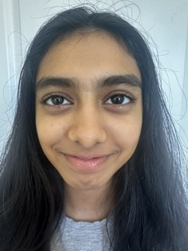
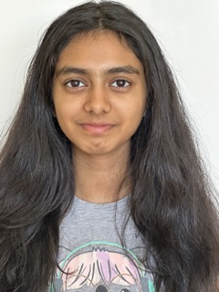
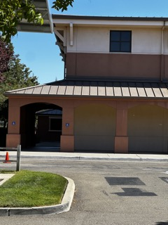
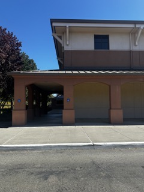
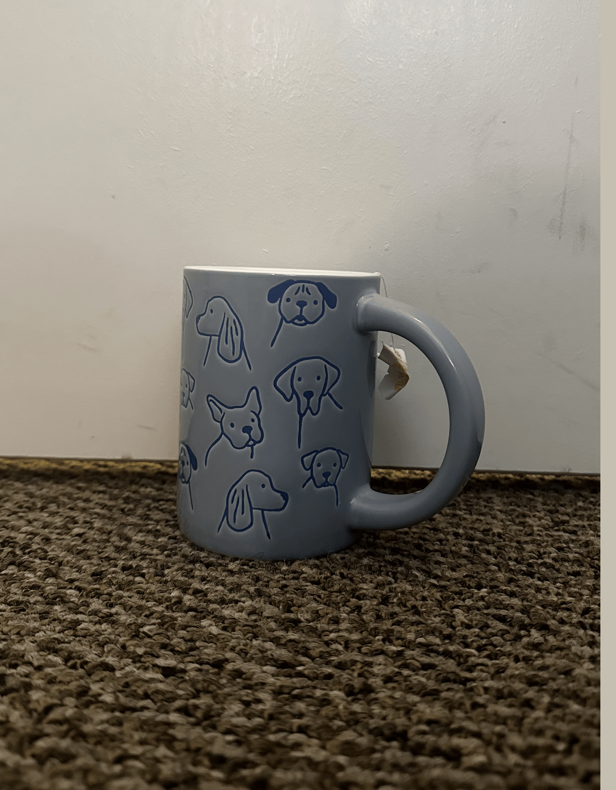

Close-up distorted selfie image vs. stepped-back image with zoom.


Explanation: The reason that this distortion occurs is that when the camera is close to the face, some features, such as the nose, are closer than other parts of the face. However, after stepping back and zooming in, the relative distance to the camera is around the same and less significant, so the image looks normal.
Building scene zoomed far vs. building close showing perspective compression.


Explanation: When I stand far away from the building and zoom in to take the picture, it compresses the depth, making the parts of the building seem naturally flattened with less significant distances. However, if I move closer, it emphasizes the parts of the building that have a different relative distance to the camera.
Animated gif sequence showing the dolly zoom effect.

Explanation: Every time I step backward while zooming in, the main object is in the same location/focus in the picture. However, the background distance and clarity around the object change, making it seem more expanded.